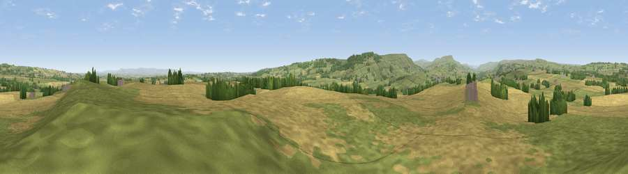

Sugar Hill
#9159 in England · top 12% of its area beats it · near Constable BurtonThe view, rendered

A 360° render of this exact spot computed from the terrain model, tree cover and land cover — summer colours, afternoon light, calibrated against photographs of famous viewpoints. Real trees, hedges and buildings will differ in detail.
The panorama
Grey silhouette: terrain skyline in each direction (720 bearings, Earth curvature and refraction included). Dashed green: skyline with trees (+15 m) and buildings (+8 m) as obstacles. Blue strip: how far the ground is visible on each bearing.
Where the view opens
Wedge length = distance to the farthest visible ground on that bearing (vegetation-aware). Rings at 10, 25 and 50 km.
What fills the view
48% cropland · 46% grassland · 5% woodland ·
Angular shares of the visible panorama (visual magnitude), not map area. Landscape diversity 0.39 (0–1 Shannon).
Key numbers
More beautiful places nearby
The staircase of upgrades: each row has a higher view potential than everything closer. Driving times are estimates from straight-line distance, calibrated against real road routing — check an actual route before setting out.
| Place | Direction | Drive | Score |
|---|---|---|---|
| Viewpoint near East Witton | SSW · 4 km | ~10 min | 77.8 |
| Viewpoint near Kirby Knowle | E · 29 km | ~46 min | 80.5 |
| Beacon Hill | ENE · 32 km | ~49 min | 84.7 |
| Carlton Bank | ENE · 38 km | ~57 min | 85.1 |
| Roseberry Topping | ENE · 48 km | ~69 min | 85.8 |
| Viewpoint near Lazenby | NE · 50 km | ~71 min | 86.4 |
| Warsett Hill | ENE · 62 km | ~85 min | 86.8 |
| Viewpoint near Easington | ENE · 66 km | ~89 min | 90.2 |
54.29525, -1.75760 · source: dobih hill · position refined by local search. Computed location — check access rights before visiting.